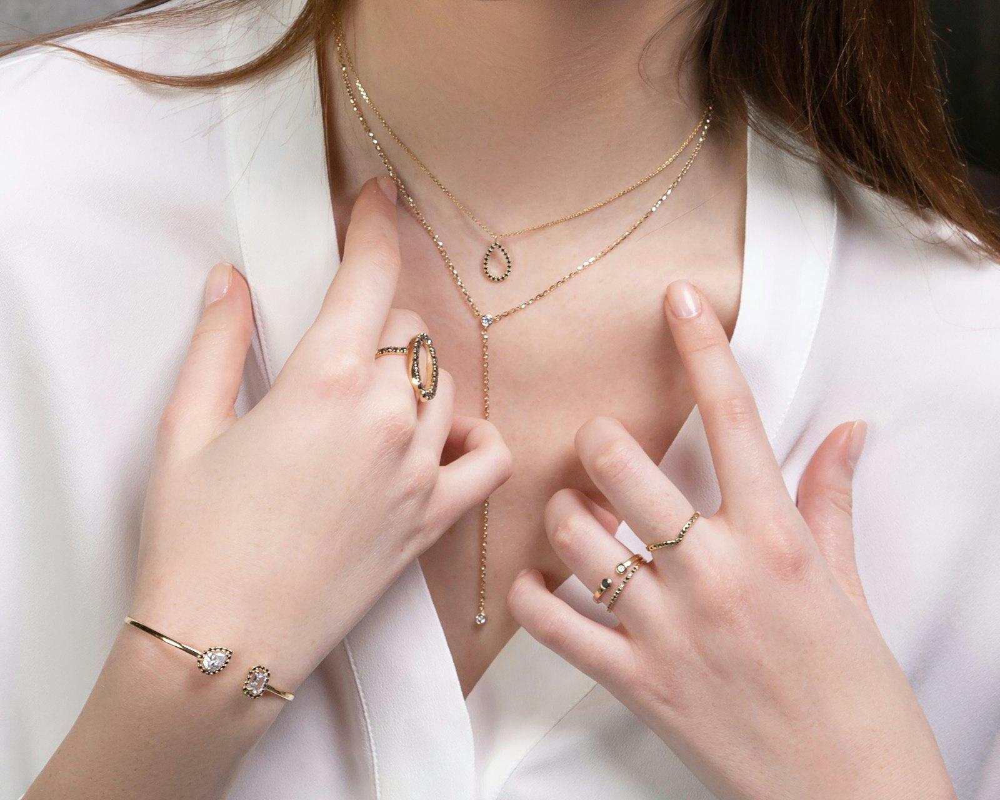

Joias com a sua pedra
Anéis, brincos e colares feitos no ateliê, com a pedra e o tamanho que você escolher.
Uma seleção de modelos
Toque numa peça para ver o peso, as pedras e as cores disponíveis.
Imagens ilustrativas dos modelos. Peso sujeito à variação de acordo com o tamanho do aro.

Nossa história
Esta parte vai contar a trajetória do ateliê com as palavras de quem faz as peças.
Como tudo começou
Quando e como o ateliê começou na ourivesaria.
Em breveO ateliê hoje
Onde fica, que peças mais faz e em quais feiras encontrar.
Em breveNosso jeito de trabalhar
O cuidado na escolha das pedras, no acabamento e no atendimento.
Em breve
O que o ateliê faz por você
Os serviços abaixo mostram o formato. A lista definitiva vem do ateliê.
-
Peças sob encomenda
ExemploEscolha um modelo do catálogo e o ateliê produz com a cor de pedra e o tamanho de aro que você quiser.
-
Conserto e restauração
ExemploSolda, troca de pedra, polimento e limpeza para a joia voltar a brilhar.
-
Ajuste de tamanho
ExemploAumentar ou diminuir o aro de anéis e alianças.
-
Personalização
ExemploGravação de nomes e datas e peças pensadas para presentes e datas especiais.
Como funciona uma encomenda
ExemploEscolha
Você escolhe um modelo no catálogo e anota o código.
Conversa
No WhatsApp, vocês combinam a cor da pedra e o tamanho do aro.
Produção
A peça é produzida no ateliê.
Entrega
Você recebe a joia pronta para usar.
O que dizem de nós
Os relatos e os prints de clientes entram aqui.
Espaço para o depoimento ou o print de um cliente.
Em breveEspaço para o depoimento ou o print de um cliente.
Em breveEspaço para o depoimento ou o print de um cliente.
Em breve
Gostou de alguma peça?
Chame o ateliê no WhatsApp e combine o modelo, a cor da pedra e o tamanho.
- Número do ateliê em breve
- Perfil do ateliê em breve
- Feiras
- Feiras e horários em breve